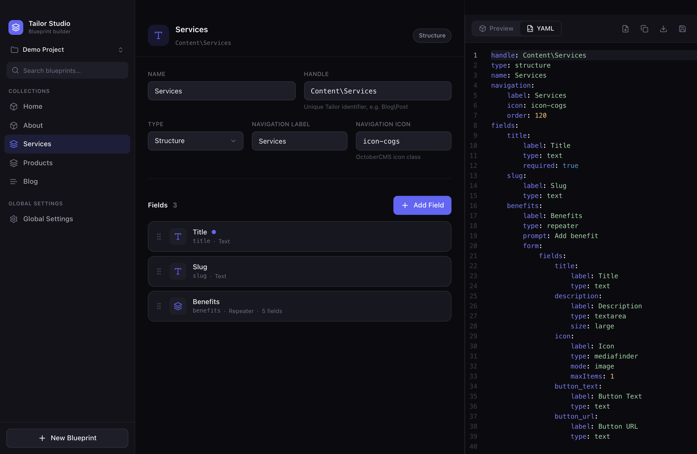
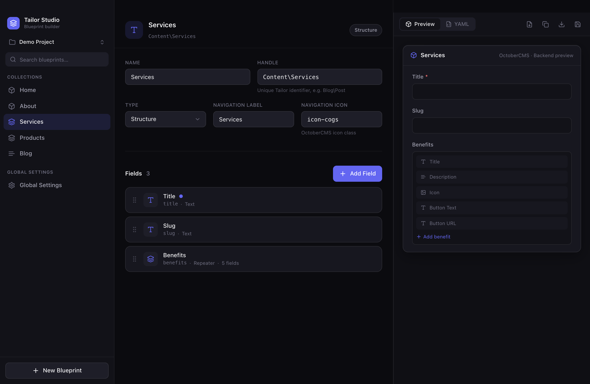
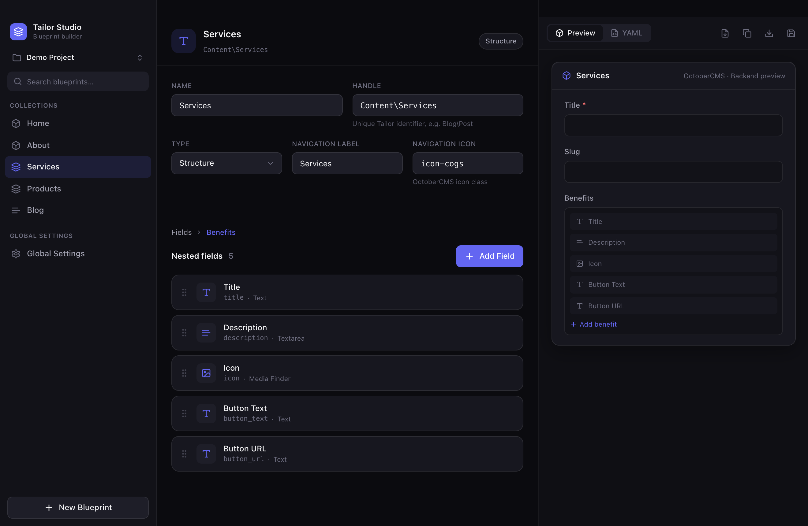

Build OctoberCMS Tailor blueprints visually
Tailor Studio turns Tailor blueprint design into a fast, visual workflow — right in your browser or as a native desktop app. Drag fields, nest repeaters, wire relations, and export clean, valid Tailor YAML in real time. No more hand-writing YAML.
Runs right in your browser — no install. Or download the native app for macOS · Windows · Linux.

Everything you need to design Tailor schemas
A focused tool that speaks OctoberCMS Tailor conventions natively.
Visual blueprint editor
Set the handle, name, type (Single, Structure, Stream, Global) and backend navigation — all from a clean form.
17 field types
Text, Rich Editor, Media Finder, Code Editor, Dropdown, Color Picker, Repeater, Entries and more — each with its own options.
Repeater builder
Open any repeater into a nested editor with breadcrumb navigation. Unlimited nesting, drag-sortable at every level.
Entries relations
Wire relations to other blueprints visually: source, relation type, display mode and max items.
Live YAML
A Monaco editor shows valid Tailor YAML as you build. Edit the YAML directly and it parses back into the UI.
Multiple projects
Create, rename, duplicate and switch between projects. Everything auto-saves locally so nothing is lost.
How it works
Three panels, one fast loop: design on the left, configure in the middle, see the result on the right.
Projects & blueprints
Switch projects and browse your blueprints, grouped into collections and global settings.
Fields & repeaters
Add fields from a searchable picker, drag to reorder, and dive into repeaters for nested structures.
Preview & YAML
Check the backend form preview, copy or export the generated Tailor YAML, or save the whole project.
handle: Shop\Products type: structure name: Products fields: title: label: Title type: text required: true image: label: Image type: mediafinder
See it in action


Frequently asked questions
What is Tailor Studio?
Tailor Studio is a free, native macOS application for visually building OctoberCMS Tailor blueprints. Instead of hand-writing YAML, you design content schemas in a three-panel UI and the app generates valid Tailor blueprint YAML in real time.
Is this a plugin builder?
No. Tailor Studio focuses exclusively on OctoberCMS Tailor blueprints. OctoberCMS already ships the Builder plugin for plugins; Tailor Studio complements it by handling Tailor content schemas.
Which field types are supported?
Text, Textarea, Markdown, Rich Editor, Number, Date, Switch, Checkbox, Dropdown, Color Picker, Media Finder, File Upload, Code Editor, Repeater, Entries, Section and Partial.
Is it free and open source?
Yes — free and open source under the MIT license. Download the macOS app or build it yourself from source on GitHub.
How do I install it?
Download the installer for your platform from the GitHub Releases page: a .dmg for macOS (Apple Silicon or Intel), a .exe/.msi for Windows, or an .AppImage/.deb for Linux. On macOS the app is currently unsigned, so right-click it and choose “Open” the first time.
Does it support light mode and other languages?
Yes. In Settings you can switch between Dark, Light and System themes, and choose the interface language — English or Slovak (Slovenčina).
Stop writing Tailor YAML by hand
Design your OctoberCMS content schemas visually and ship them in minutes.